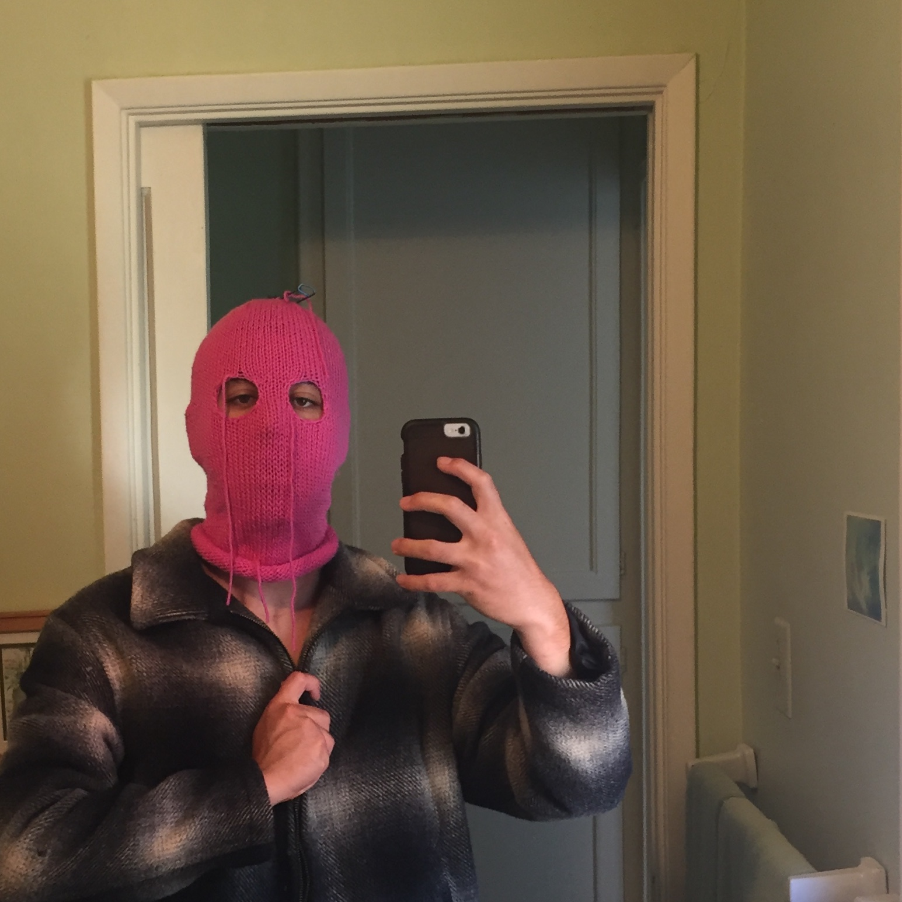

e l i j a h - s o l o w - o h a s h i

solowohashi, born elijah solow-ohashi, is a student at the university of california, santa cruz. as a child, he liked breastfeeding and drawing. at thirteen, he became a man under jewish law. around the same time, he became skeptical of organized religion. in grade school, elijah met lilet, a famous thinker from the nascent period of the digitization era. other figures, including taj lalwani, miles wilson, and levon momdjian have had a great influence on elijah's life and work.instagram